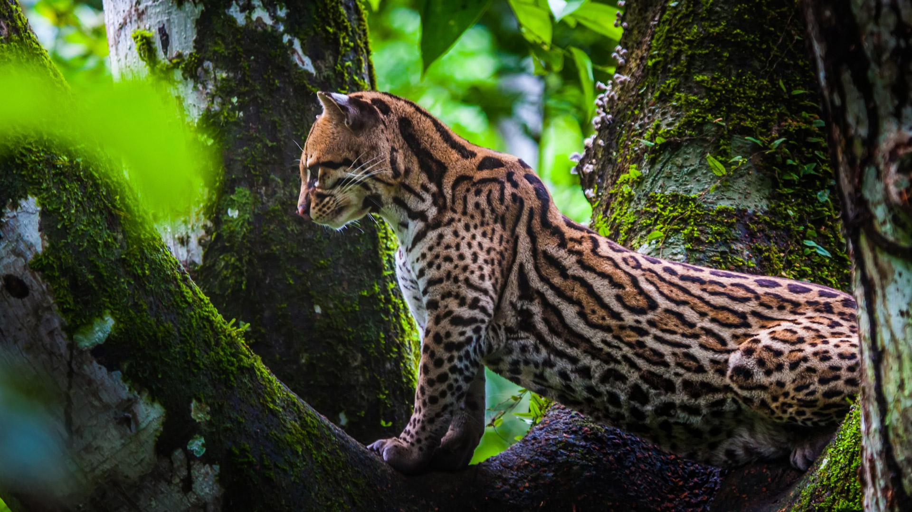
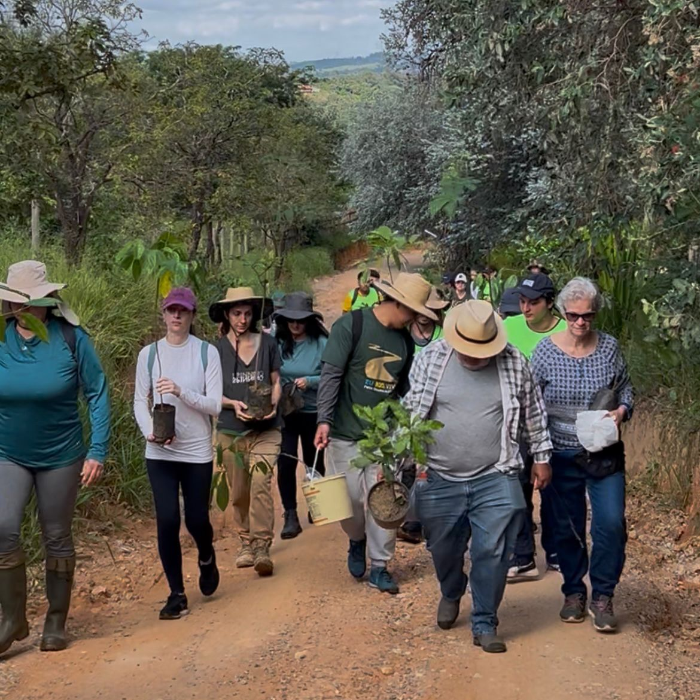
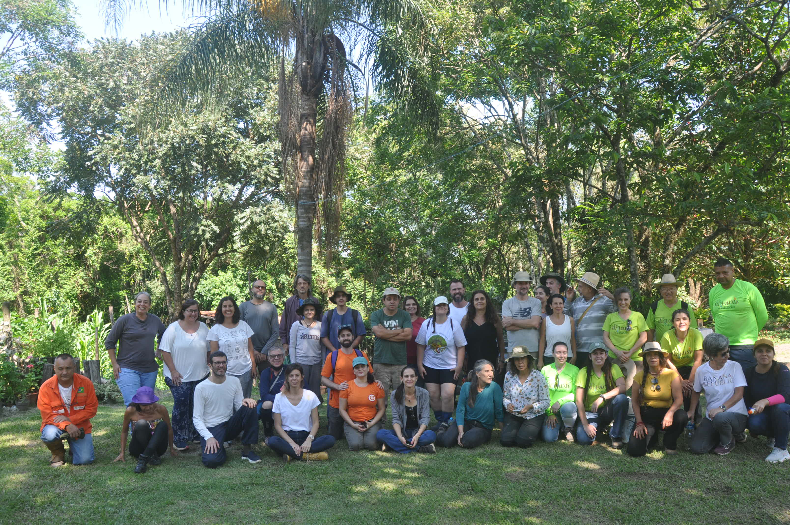
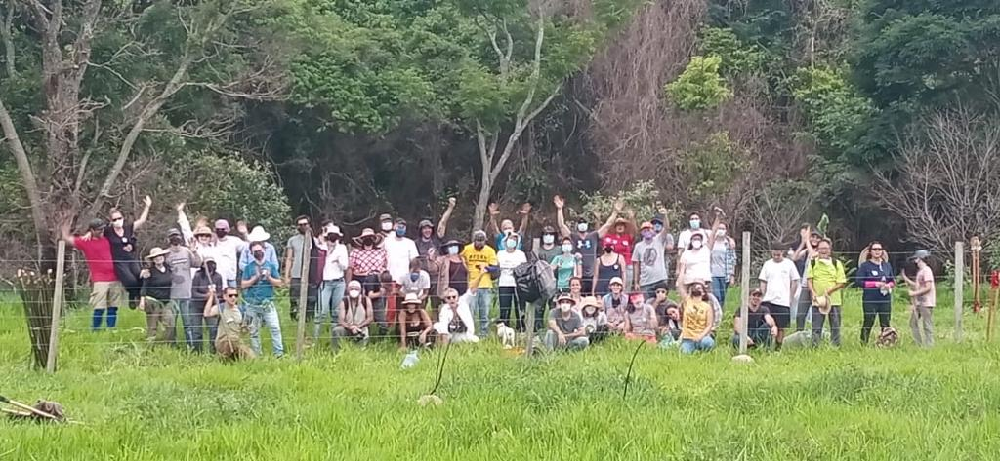
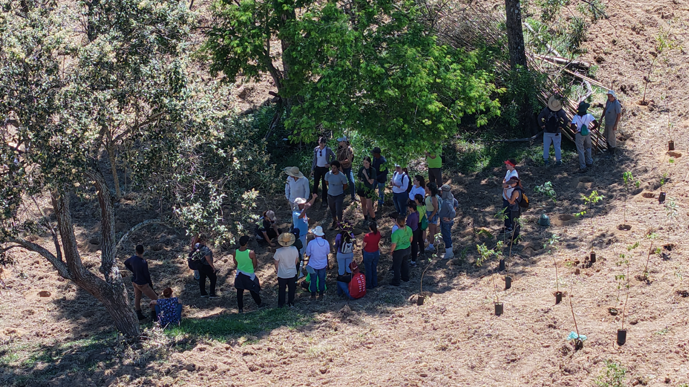

Missão
“Nossa missão é fazer a conexão das florestas de Mata Atlântica da APA de Campinas.”

APAVIVA • CONEXÃO FLORESTAL
A APAVIVA atua pela conservação dos remanescentes de Mata Atlântica da APA de Campinas, unindo restauração florestal, educação ambiental e participação social.

Conservação e01 / SOBRE A APAVIVA
A Associação dos Amigos da APA de Campinas — APAVIVA foi constituída em 2010 por moradores do Distrito de Sousas. Sua origem está ligada à proteção da Mata Ribeirão Cachoeira e à defesa da APA de Campinas.
A organização busca conservar os remanescentes florestais e conectar fragmentos de Mata Atlântica. Essa atuação reúne participação em conselhos ambientais, educação, mobilização comunitária e apoio à pesquisa.
“Nossa missão é fazer a conexão das florestas de Mata Atlântica da APA de Campinas.”
A APA de Campinas é uma Unidade de Conservação de Uso Sustentável que abrange Sousas e Joaquim Egídio, entre outras regiões. Seus aproximadamente 223 km² correspondem a cerca de 27% do município.
02 / ATUAÇÃO E CAUSAS
Frentes de atuação apresentadas pela APAVIVA
em suas páginas institucionais.
Defesa dos remanescentes florestais e da biodiversidade, com atenção à Mata Ribeirão Cachoeira.
Plantio e restauração para conectar fragmentos florestais da APA de Campinas.
Campanhas, palestras, seminários e projetos educativos junto às comunidades.
Atuação em conselhos ambientais e proposição de políticas de conservação.
Educação e mobilização em defesa do Rio Atibaia por meio do projeto Eu Rio, Vivo.
Articulação de pessoas e organizações em redes de participação e cuidado com o território.
Fontes: Sobre a APAVIVA (abre em nova aba) · Causas oficiais (abre em nova aba)
03 / PROJETOS

RESTAURAÇÃO E EDUCAÇÃO
Criado em 2022, o projeto atua na zona envoltória da Mata Ribeirão Cachoeira e nos corredores ecológicos da APA de Campinas.
Objetivo: restaurar a vegetação nativa e formar agentes ambientais multiplicadores. Em 2026, a iniciativa passou a integrar o Eu Rio, Vivo.
Saiba mais sobre Reflorestadores Voluntários (abre em nova aba)EDUCAÇÃO E DEFESA DO RIO ATIBAIA
Projeto de educação ambiental e educomunicação, com duração prevista de 18 meses, que mobiliza jovens, educadores e comunidades.
Objetivo: fortalecer uma rede territorial em defesa do Rio Atibaia e do reconhecimento de seus direitos, por meio de oficinas, intervenções e materiais educativos.
Esses objetivos não representam resultados já alcançados.
Saiba mais sobre Eu Rio, Vivo (abre em nova aba)04 / IMPACTO
Resultados publicados pela APAVIVA
em 6 de agosto de 2026.
Dados baseados em informações publicadas pela APAVIVA em 2026. Consulte a publicação (abre em nova aba)
2010 — Constituição da APAVIVA. Marco da associação, distinto dos resultados do projeto. Fonte histórica (abre em nova aba)
05 / GALERIA
Fotografias publicadas pela APAVIVA.
Edições do Reflorestadores Voluntários.


Fonte das fotografias e identificação das edições (abre em nova aba)
06 / PARTICIPE
Consulte a APAVIVA pelos canais oficiais para saber sobre participação e apoio.
Conheça o Reflorestadores Voluntários e entre em contato com a organização para consultar oportunidades de participação.
Consulte a APAVIVA (abre em nova aba)Leia as publicações da associação para conhecer seus projetos, atividades e mobilizações ambientais.
Acompanhe no site oficial (abre em nova aba)Para informações sobre como apoiar a organização, utilize o contato institucional publicado pela APAVIVA.
Entre em contato (abre em nova aba)Esta página acadêmica não recebe doações nem inscrições. Os links acima abrem canais oficiais em nova aba.
07 / CONTATO
Informações consultadas na página oficial de Contatos em 7 de outubro de 2026.
Estrada Sousas Pedreira km 7 – Lote 57C
Distrito de Sousas – Campinas/SP
Telefone: (55) 19 993182338 / 19 21229020
E-mail: apaviva@apaviva.org.br